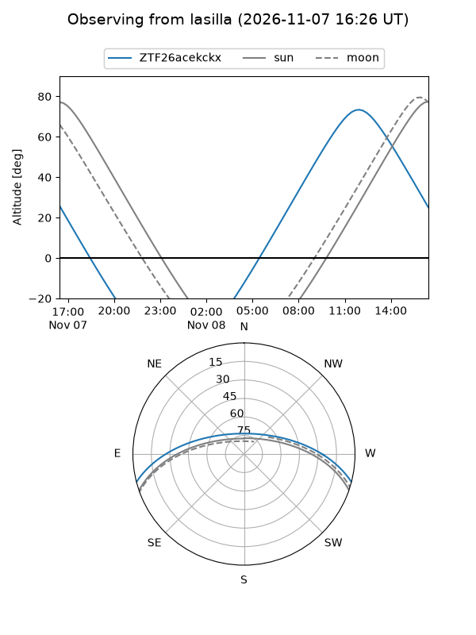
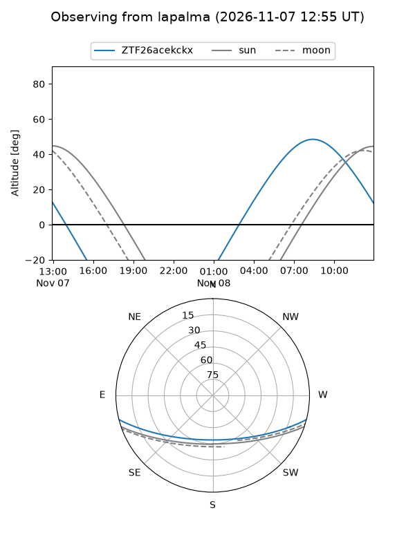
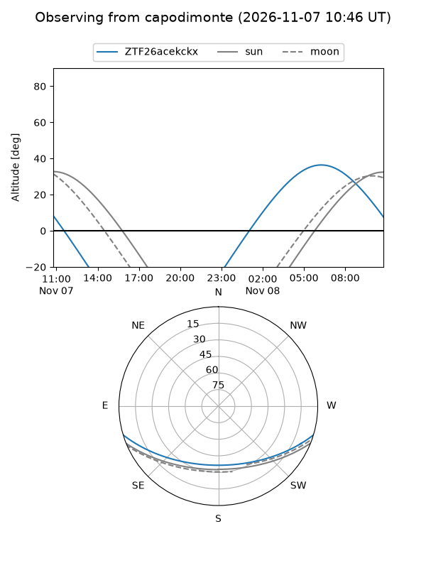
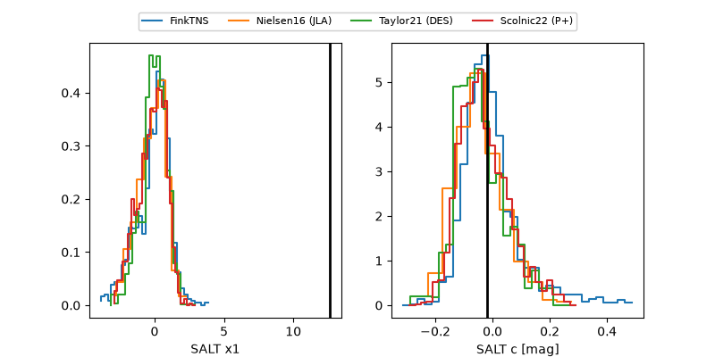

ZTF26acekckx
Target ZTF26acekckx at 2026-11-07 14:09
Aliases and brokers:
FINK-ZTF: ztf.fink-portal.org/ZTF26acekckx
Lasair-ZTF: lasair-ztf.lsst.ac.uk/objects/ZTF26acekckx
ALeRCE-ZTF: alerce.online/object/ZTF26acekckx
Direct TNS query: direct search
alt names
ZTF26acekckx (ztf,fink_ztf)
Coordinates:
equatorial (ra, dec) = 155.2460,-12.55440
equatorial (HMS+DMS) = 10:20:59.04,-12:33:15.85
galactic (l, b) = (255.4387,+36.08808)
Flags:
likely cv: !!
CV pen: 0.7884883161245665
peak dt: -0.7
Photometry:
last ztfr=18.77
3 ztfr detections
Lightcurve
Visibility



Additional plots
